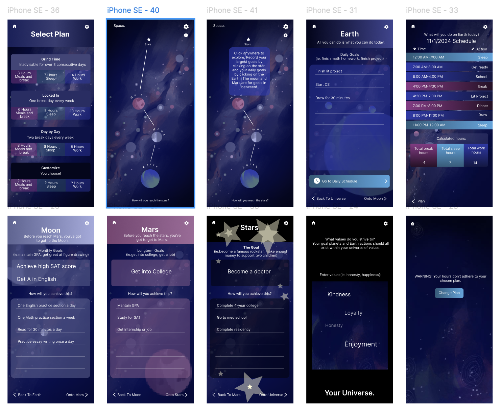
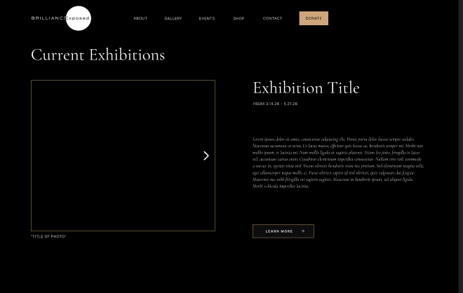
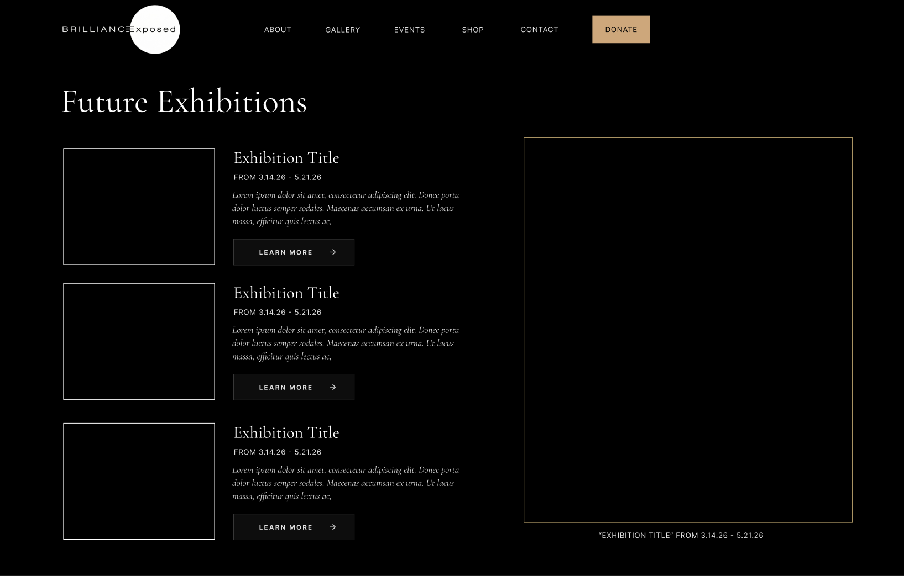
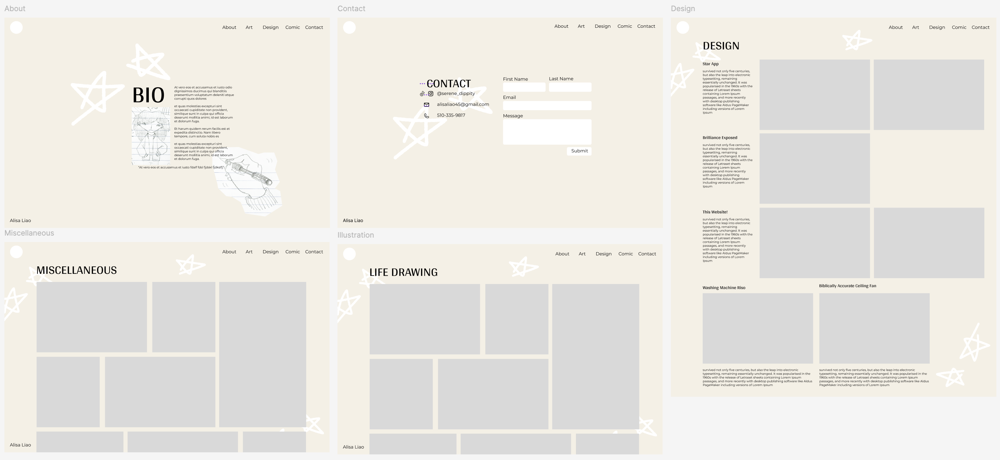
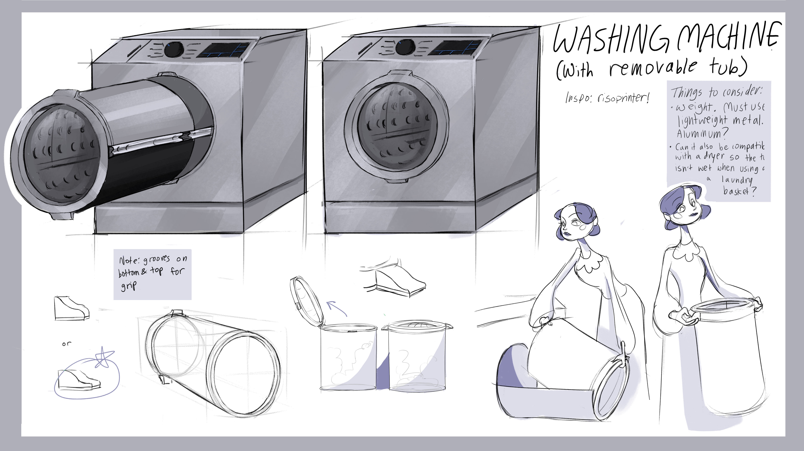
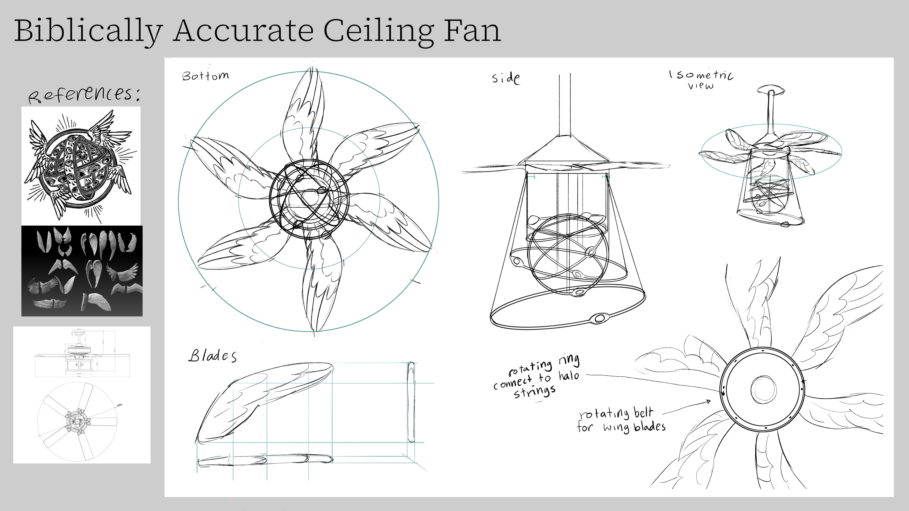

This is one of my very first projects in Figma, made in the winter of 2024: an app to help with tracking your goals while keeping your values in mind. It allows you to organize your goals in a hierarchical structure, going from daily schedules to long term goals. I painted the backgrounds and planet icons in Adobe Photoshop to keep with the celestial, ethereal vibe. Check out the video to really see its inner-workings.

Brilliance Exposed is a photography exhibit and creative concept dedicated to displaying black-presenting professionals that excel in their field. I'm working with a team of 7 people to redesign and develop their website. Here's a couple quick progress shots.


This website is my first attempt at front-end development and a space for my own self-expression. I started designing it from scratch using notebooks, sketchpads, and Figma. I wanted it to represent everything I'm passionate about: stars, sketches, and projects. Hope you're enjoying it so far!


I was wondering how I could make washing machines more convenient, and was inspired by the removable tubs of a risograph-printing machine. This way, the step of transferring clothes separately into the washing machine is mitigated. Instead, the whole tub can be removed and inserted.

This is more of a decorative item than anything. It's a ceiling fan inspired by depictions of biblically accurate angels. I considered the way it would look from all different angles, and really took this opportunity to practice precise, volumetric drawings for industrial design.